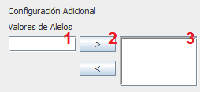

Dependiendo del tipo de gen, se muestra una configuración adicional que debe ser definida antes de poder agregar el gen.
En el caso de los enteros, se debe definir el rango al que pertenece el gen. Se debe tener en cuenta que Max>Min y que el rango permita más de un elemento.
Al igual que con los enteros, se debe definir el rango al que pertenece el gen. Se debe tener en cuenta que Max>Min. Los spinner para Max y Min incrementan de la misma manera que la de los entero, para colocar decimales utilice el punto "." para separar la parte entera de la decimal.
Para los genes de tipo caracter, se debe definir el rango al que pertenece. Se debe tener en cuenta que Max>Min y que el rango permita más de un elemento. Además, se debe recordar que éstos solo aceptan caracteres individuales.
Los genes de tipo Nominal requieren de una configuración más compleja a los anteriores. En la siguiente figura se muestra la configuración adicional para tipos Nominales:
Donde cada número representa los pasos para crear uno de los posibles Alelos para el Nominal:
Definir Nombre del Alelo
Agregar Alelo
Alelos Definidos
1. Definir Nombre del Alelo: Consiste en colocar un nombre al Alelo que se esta creando, se debe cumplir que el Alelo no tenga un nombre repetido a alguno de los otros Alelos del Gen que se está definiendo.
2. Agregar Alelo: Al presionar sobre el botón con el simbolo ">" (Sin las comillas), se agrega el Alelo a los Alelos definidos para el gen.
3. Alelos Definidos: Muestra una lista de los alelos que ya fueron definidos, esta lista debe contener al menos 2 alelos para que el gen sea aceptado. Los alelos pueden ser eliminados si se selecciona uno y se presiona el botón con el simbolo "<" (Sin las comillas).